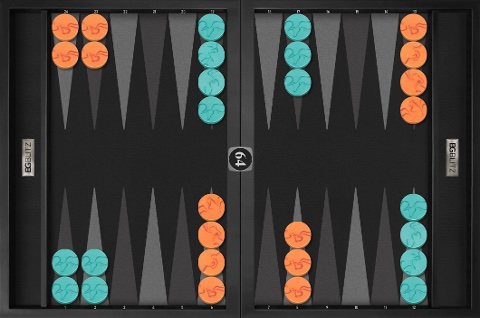

ナックギャモン (Nackgammon) は、世界最強のギャモンプレイヤーの一人であるNack Ballard が考案したゲームです。バックギャンと初期配置が異なるだけで、ほかのルールは同じです。ナックギャモンの初期配置は、以下のように、ミッドポイントと６ポイントの５つのチェッカーのうちの１つずつを、２３ポイントに配置します。
ナックギャモンは、Nack Ballard が、バックギャモンの生徒たちに、ポジショナルプレイを練習させるために考案したものです。つまり、バックギャモンの技術を向上させるために考えられたゲームであるところに特徴があります。バックマンが４個あるため、ランニングゲームやブリッツにはなりにくく、プライミングゲームになりやすいという特徴があり、したがってゲームはバックギャモンよりも長くなる傾向にあります。
BGBlitzではナックギャモンをプレイすることができます。